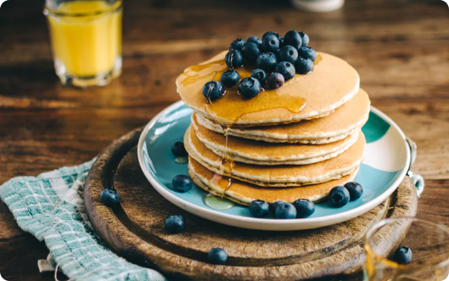
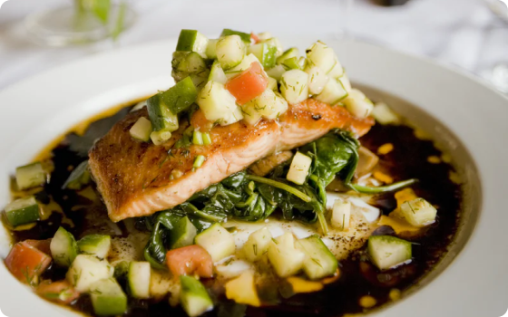

Pancake Recipe
These pancakes, made with patatoes as main ingredient, often turn on menus across Balkan region

Fish Soup Recipe
A delicious recipe enjoy by whole family with a strong taste given by smoke fish and appease by season herbs

Meatballs Recipe
A classical recipe that cannot missing from family menu